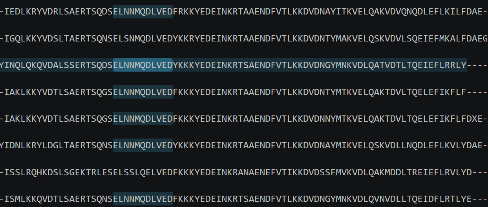
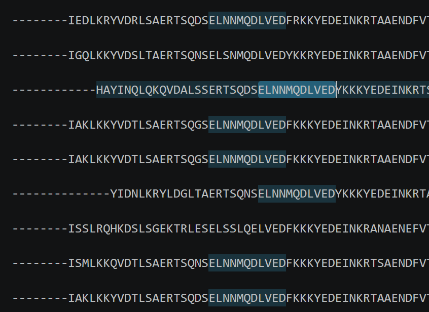

Keratin Phylogeny: Heptad Alignment of the Coiled-Coils
Tanishq Milani — semester work · register-aware alignment of keratin coiled-coil domains for phylogeny · ← summer work
§00 Why Not a Whole-Sequence MSA
Keratins have a conserved central coiled-coil flanked by head and tail domains. The heads and tails are low-complexity, glycine/serine-rich and very variable in length between keratins and species, so an MSA of the full sequences is filled with gaps from these regions.
Trees built from whole-sequence MSAs showed this problem: several branches were unrealistically long, due to poorly aligned head and tail regions
Therefore only the coiled-coil domain is used. Heads and tails will be attached back later
§01 Why Align by Structure Instead of MSA
Keratins form heterodimers in which a Type I and a Type II helix wind around each other as a coiled coil. The sequence repeats every seven residues (a heptad, positions a b c d e f g):
a, d: mostly hydrophobic, they form the core between the two helices
e, g: often charged, they form salt bridges between the chains
b, c, f: face the solvent
The helices pack by knobs-into-holes packing. Each a or d side chain is a "knob" that fits into a "hole" formed by four residues on the partner helix, like a ball and socket.
Because a residue's role depends on its heptad position, equivalent positions should be compared: a with a, d with d. A standard MSA does not know about the register; it can shift sequences by a few residues and line up a core residue against a surface residue. We therefore align by heptad register instead.
§02 Data
4494keratin sequences
64keratins
~121mammal species
CoCoNat per-residue coiled-coil predictions for all sequences
Each residue has a predicted heptad position (a–g) or is labelled non-coil (i)
§03 Method
Each sequence is split into coiled-coil segments (consecutive runs of a–g)
Each segment is cut into heptads. A skipped position (for example abc--fg) becomes a gap. No residue is removed
Simply stacking heptads in order (heptad 1 under heptad 1) was not used, because a single missing or extra heptad shifts every heptad after it out of place
Within each segment, sequences were aligned with a heptad-level Needleman–Wunsch alignment:
The unit of alignment is a whole heptad rather than a single residue, so slot a always faces slot a and a missing heptad is a 7-residue gap
Two heptads are scored by summing BLOSUM62 scores over their 7 slots, and gaps carry a penalty
Each sequence is aligned to the representative sequence of its group (mostly human), and the pairwise alignments are merged into one multiple alignment (centre-star alignment)
Columns that are a gap in every sequence are removed
Heptads per segment and in total are tabulated for every sequence
Sample KRT2 alignments

Figure — Heptad-based Needleman–Wunsch: the conserved motif lines up in one column across species

Figure — Simple heptad stacking, for comparison
§04 Outputs
results_all_segments
§05 Future Work
Build trees from the coiled-coil alignments:
keratin-wise (one tree per keratin across species)
species-wise
Type I vs Type II keratins
Compare these trees with the earlier whole-sequence trees, especially the long-branch cases
Attach the head and tail domains back to the coiled-coil alignment